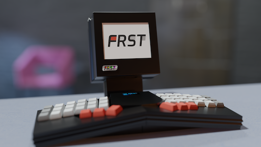

Thank you for visiting JonSharp.net. You're currently viewing the "smolweb"
version of the site. Congratulations on using a text-based, no-javascript,
or otherwise "limited" browser! (If you're using a screen reader, you are extra
welcome! Please let me know how I can improve navigation.)
The most significant feature of this web mirror is the showcasing of my
PCD-68 virtual retrocomputer, compiled for the web using emscripten.
Users visiting this site on a modern browser with JavaScript and WASM
support enabled are greeted with a functional version of the PCD-68
emulator, booting up my "JonSharp.net sampler ROM". This is a bespoke
demo program written in 68000 assembly which displays a plain text
summary of my gopher content, allowing the user to scroll through
this content using keyboard input. It also includes a couple of my
watercolors, down-sampled to 1-bit for the PCD-68 display.
If you'd like to see the full version of the PCD-68 emulator, you
can either visit this site using a modern browser on a desktop or laptop
computer -or- you can grab the source code for the emulator and the ROM at
GitHub.
The following is the text content used in the ROM:
Welcome to my web mirror!
This is a PCD-68 ROM sampler of my primary digital space over at
gopher://jonsharp.net -- just a flavor for people who haven't yet
discovered the joy of port 70. If you're wondering what the heck Gopher is,
well... it's like the web, but a little more spartan.
PCD-68 is a virtual retrocomputer of my design. You are reading this text
inside a version of my pcd68 emulator compiled for the web.
Who Am I?
I'm Jon Sharp, a software developer, vintage computer collector, and
retrocomputing enthusiast with a serious case of nostalgia for when computers
were actually personal.
When I'm not homebrewing computers, hacking 68k assembly or evangelizing
Plan 9, you might find me hiking or risking more ER visits on my surf-skate.
The Retrocomputing Laboratory
My digital archaeology spans everything from Apple 1 replicas to handheld game
consoles. Some highlights from the collection:
Bare-metal Macintosh Programming - What happens when you throw out the Mac ROM
and its Toolbox? You get a blank slate for imagination (and a lot of 68k
assembly headaches). I've been progressively building an alternative OS for
the Mac Plus, because why not?
Gameboy Ethernet Project - Back in university, I turned a Game Boy Color into
a remote reporting tool via Ethernet with the help of a unique embedded system.
Painted Laptops - Sometimes a computer needs more than just fresh thermal paste.
I've given vintage laptops the full makeover treatment: camo patterns for 486
machines that need to blend with the forest, "Pentium Inside/Outside" body art,
and hot-rod red TiBooks.
FRST Computer: When Art Meets Computing
My primary art project is FRST Computer - a small batch, artisan personal
computer company where I craft beautiful and unique machines one batch at a
time. Think of it as the intersection of industrial design, elegant source
code, and a healthy skepticism of algorithmic social networking.
Model Three: If you're going to build a time machine...
Models One & Two: ePaper CyberTerminals - For when you want efficiency,
readability, and the ability to compute without burning through your battery
in two hours.
FRST represents my exploration of minimalist, sustainable computing - empowering
users to adopt a simpler digital lifestyle and replace ad-driven feeds with
real-world community building. It's an homage to the most brilliant
artist-engineers of the personal computing era.
Art & Philosophy
Someone once said that to be an artist, one needs to be unafraid to make bad
art. My 4" watercolor books represent one of my primary artistic outlets - tiny
paintings created during moments I might otherwise be tempted to scroll on a
smartphone. Oh, and to demonstrate that PCD-68 can do fancy graphics, I've
included two 1-bit versions of my watercolors in this ROM. The 'p' key
activates picture mode, allowing you to navigate ('j'/'k') the two stored
images. Use the 't' key to return to 'text mode'.
I also believe deeply that uptime is overrated, entropy is good (and so is Lisp)
and that software complexity will kill us all.
The Gopher Philosophy
Why Gopher in 2025? Because sometimes the best way forward is to step back and
remember what made computing personal in the first place. Gopher is like the
web, but with soul - a place where content matters more than presentation,
where community trumps commerce, and where you can actually read something
without seventeen data brokers siphoning your data.
My gopher hole has been running for a few years now, serving up everything from
technical deep-dives to album reviews (M83's "Hurry Up, We're Dreaming" won my
2011 Album of the Year award, in case you were wondering). It's a labor of
love, a digital garden, and proof that good things come to those who embrace
plain text.
--
Full Gopher Experience: gopher://jonsharp.net
Email: jon@jonsharp.net
Mastodon: @jrsharp@mastodon.sdf.org
GitHub: @jrsharp
--